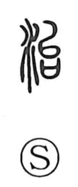

治

Kun: osameru, osamaru, naoru, naosu | On: chi, ji
to govern ・ administration ・ politics ・ to cure ・ to heal ・ to put in order ・ to correct ・ to repair
Explanation
治 combines 水 with 台 as its phonetic. 台 joins 厶, the old plough shape, with 口, a vessel containing written prayers. At the beginning of cultivation, the implement is purified and a plentiful harvest sought through prayer.
治 probably extends that rite to water: bringing the water under control and making it fit for the fields. The practical work of regulating a flow is accompanied by the ritual that secures its proper condition.
From ordering water come managing an affair and governing a country. The same act of setting right can be directed toward the person: regulating the mind, correcting conduct, or restoring the body to health. Government, treatment, repair, and improvement share this movement toward a well-ordered condition.